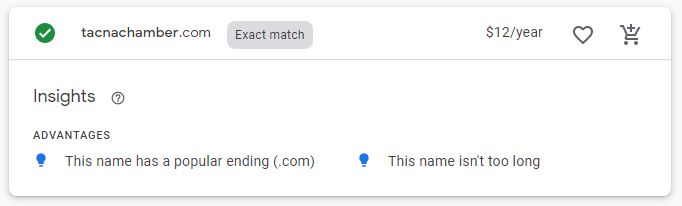

Side Name
Tacna Chamber
Site Purpose
Tacna is a little city located at the south of Peru, it is the last city
found at the Peruvian map to 40 minutes of the border with Chile. This
side has the purpose of increase the city commerce which own part of
what it is to the chilean turist.
Something interesting to know about this city... even when it's a small city with
no more than 300,000 citizen, it's located close to two mining center SCPP Toquepala and
Minsur which are located in the
mounts but they required many supplies and services from the out side.
This contribute to the creation of growing bussiness and new
interprenature.
All new bussiness ideas to improve the commerce are
welcome to be part of this side, so Tacna Chamber is the place for
business people to work together.
Domain Name
Logo